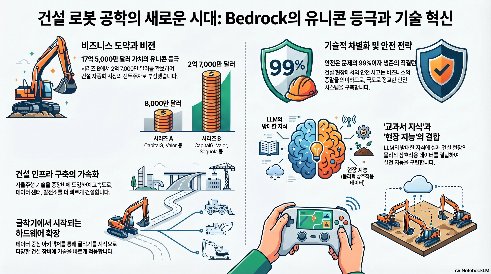

(한민확인)yt_Bedrock_Hits_175B_Valuation_Ex-Waymo_CTO_Explains_Why_Construction_Robotics_Failed_Until_Now_요약
(한민확인) Bedrock Hits $1.75B Valuation: Ex-Waymo CTO가 설명하는 건설 로봇이 지금까지 실패했던 이유
영상 개요
Bricks & Bytes 팟캐스트에서 전 Waymo CTO이자 Bedrock 공동창업자 Kevin Peterson을 인터뷰한 내용이다. Bedrock은 2025년 초 시리즈 B 라운드를 마감하며 기업가치 17.5억 달러(약 2조 원) 의 유니콘 기업으로 등극했다. 불과 6개월 전 시리즈 A에서 8천만 달러를 조달한 이후 급격한 성장을 이룬 배경, 건설 장비 자율화 기술의 현재와 미래, 그리고 과거 건설 로봇 스타트업들이 실패한 이유를 심층적으로 논의한다.
핵심 요약
1. Bedrock이란 무엇인가
- 중장비 자율화 스타트업으로, 굴착기(excavator)를 시작으로 건설 현장의 무인화를 추진
- 현재 미국 10개 지역에서 고객사 현장에 굴착기 배치 운영 중
- 주요 프로젝트: 데이터센터, 공장, 도로/고속도로 건설 현장에서 대규모 토공(mass excavation) 수행
- 60~70,000 입방야드 규모의 토공 작업 완료 사례 보유
- 현재는 감독 모드(supervised) — 운전석에 사람이 탑승하나, 조만간 완전 무인화 전환 예정
2. 시리즈 B 투자 배경: 왜 이렇게 많은 자금인가
- CapitalG(구글 성장 PE 팀)와 Valor Equity Partners가 리드 투자자
- 자금 사용 목적: 대규모 AI 모델 훈련, 하드웨어 구매, 데이터 수집, 팀 확장
- 투자자들이 먼저 적극적으로 접근한 "기회적(opportunistic)" 라운드
- 충분한 런웨이(runway) 확보로 기술 개발 가속화 가능
3. Waymo와의 비교: 자율주행차 vs 건설 자율화
- Kevin은 Waymo 고속도로(freeway) 런칭 팀 출신으로, 두 도메인을 직접 비교
- 공통점: 대규모 로봇 현장 배치, 안전 최우선, AI/ML 기술 활용
- 차이점:
- 자율주행차: A → B 경로, 복잡하지만 예측 가능한 교통 환경
- 건설 자율화: 하루에도 수 차례 작업 지시 변경, 도구처럼 운영자와 대화가 필요
- 건설은 더 통제된 현장이지만 "무엇을 할지(task)" 지시가 핵심 과제
- 어느 쪽이 더 어렵냐는 질문에: "근본적으로 다른 문제"라고 답변
4. 과거 건설 로봇 스타트업들이 실패한 이유
Kevin이 직접 분석한 경쟁사 및 선행 기업들:
| 회사 | 설립 | 조달 | 현황 |
|---|---|---|---|
| Built Robotics | ~2017 | $100M+ | 방향 전환 |
| Safe AI | 2017 | $70M | Pronto에 인수 |
| Pronto (Anthony Leandowski) | ~2020 | $100M+ 추정 | 운영 중 |
| Gravis Robotics (스위스) | 2022 | ~$30M | 운영 중 |
| Bedrock | 2024 | $80M (A) + Series B | 유니콘 등극 |
실패의 핵심 원인: 타이밍(Timing)
"훌륭한 아이디어, 훌륭한 열정, 하지만 잘못된 타이밍(great idea, great heart, wrong timing)"
- 10년 전에는 LLM이 없었고, 현재의 AI 기술 없이는 이 문제를 풀 수 없었음
- 지난 3년간 기술이 혁명적으로 변화함
- 최고의 로봇공학자들이 15~20년간 자율주행차에만 집중하다가 이제 건설 로봇으로 이동 중
- WebVan → DoorDash/Postmates 패턴과 동일: 선구자 실패 후 기술이 충분히 성숙했을 때 후발주자 성공
5. LLM의 역할: "책 지식 vs 현장 지식"
Kevin의 핵심 비유:
"LLM은 책 지식(book smart)이다. Reddit의 모든 포럼과 모든 책을 읽었지만, 현장에서는 책에 없는 일들이 벌어진다."
- 굴착기가 파이프를 집을 때 옆에 사람이 밀고 있으면 넘어뜨리지 않아야 함 → 이런 데이터는 기존 데이터셋에 없음
- Bedrock은 자체 모델 훈련이 필수: 오픈소스/클로즈드소스 기반 모델을 파인튜닝하되, 건설 현장 특화 데이터를 직접 수집
- 비디오 모델은 훈련 비용이 극도로 비싸 직접 개발 불가 → 선별적 활용
6. 기술 아키텍처 및 로드맵
- 굴착기 우선 → 다기종 확장 전략: 한 기종에서 학습한 후 빠르게 타 기종 적용 가능한 아키텍처
- 데이터 문제로 전환: "어떤 기종이냐보다 행동(behavior) 학습과 온보딩 엔진이 핵심"
- 고속 장비일수록 이중화(redundancy) 고려 필요
- 완전 무인화 목표: 1년 이내 첫 번째 완전 자율 굴착기 런칭 예정
- 장기적으로 운전석 제거 → 무게 분포 최적화된 새로운 기계 설계 가능
7. 승자의 조건: 무엇이 이기는 기업을 만드는가
- 기계 지능(intelligence): 기본 중의 기본(table stakes)
- 안전(Safety): 틀리면 즉시 사업 종료 — 절대 타협 불가
- 사용자 인터페이스(UX): 직관적인 UX가 차별화 요소 - 무전기/문자/앱으로 기계에 명령 - 비디오게임 같은 클라우드 대시보드로 다수 기계 동시 제어 - 미션 레벨 명령: "오늘은 빠르게 흙만 파라", "내일은 정밀하게 작업하라" - 켜는 순간 바로 작동(plug-and-play) 경험 필수
8. 고객 프로필 및 시장 현황
- 이상적인 고객: 대규모 토공 작업 (수십만~수백만 입방야드)
- 주요 프로젝트 유형: 데이터센터, 공장, 도로/고속도로 건설
- 지역: 미국 내 10개 지역 (확장 중)
- 자본 집중화 시작: Kevin은 "이제 자본이 한 승자에게 집중될 것"이라고 시사
핵심 장면 분석
장면 1 — Series B 발표 직후 분위기 (00:00:24)
시리즈 A 8천만 달러에서 6개월 만에 시리즈 B로 유니콘 등극. 진행자가 "유니콘 벨이 필요하다"고 유머를 날리는 축하 분위기.
장면 2 — Bedrock 사업 개요 설명 (00:01:11)
Kevin이 Bedrock의 핵심 미션을 설명: "건설 현장에 자율주행 기술을 도입해 더 빠르게 고속도로, 데이터센터, 전력 인프라를 구축하는 것." 이미 고객 현장에서 굴착기 운영 중.
장면 3 — Waymo $16B 라운드와의 관계 (00:02:50)
Waymo의 160억 달러 라운드(Sequoia 참여)와 Bedrock의 연관성 질문. Kevin: "직접 연결은 없지만, 로보틱스와 자율화 기술이 실제로 작동한다는 것을 시장이 인정하는 시점에 우리도 있다."
장면 4 — 자율주행차 vs 건설 자율화 비교 (00:04:02)
"어느 쪽이 더 어렵냐"는 질문에 Kevin의 핵심 답변: 안전은 Waymo에서 99%의 문제였고, 건설에서는 도구로서의 행동(behavior)과 LLM 기반 명령 인터페이스가 핵심 과제. 근본적으로 다른 문제.
장면 5 — 굴착기 우선, 다기종 확장 전략 (00:05:39)
첫 기종은 굴착기. 아키텍처는 기종 간 빠른 전환이 가능하도록 설계 — "데이터 문제로 전환해, 행동 학습 엔진을 만들면 어떤 기계든 빠르게 온보딩 가능."
장면 6 — 건설 로봇 경쟁사 지형도 분석 (00:10:40)
Built Robotics, Safe AI, Pronto, Gravis Robotics 등 선행 기업들의 역사 정리. "왜 VC들이 한 승자에게 집중하지 않고 여러 기업에 분산 투자했나"라는 날카로운 질문.
장면 7 — WebVan 유추: 타이밍이 전부 (00:12:44)
건설 로봇 실패의 본질을 WebVan(온라인 식료품 배달 선구자, 실패) → DoorDash/Postmates(성공) 패턴에 비유. "LLM 없이는 불가능했다. 3년 전에 물어봤다면 '아마 안 될 것'이라고 했을 것."
장면 8 — 승자의 조건: 안전 + 직관적 UX (00:15:20)
"기계 지능은 기본이고, 안전은 틀리면 끝이다. 진짜 차별화는 UX — 비디오게임처럼 클라우드에서 여러 기계를 관리하고 자연어로 미션을 지시하는 것."
주요 인사이트 및 시사점
기술 타이밍의 법칙
- LLM과 현대 AI 없이는 건설 자율화 불가능 → 과거 실패는 기술 부재, 아이디어 부재가 아님
- "타이밍이 절대적으로 중요하다(Timing is absolutely everything)" — Kevin의 핵심 메시지
건설 AI의 고유한 도전
- 책에 없는 현장 지식: 건설 행동(behavior) 데이터를 직접 수집해야 함
- 하루 두 번 작업 지시 변경 → 자율주행차보다 훨씬 높은 유연성(flexibility) 요구
- LLM 기반 자연어 인터페이스가 핵심 기술 요소
한국 건설 산업에의 시사점
- 국내 데이터센터, 반도체 팹, 산업단지 등 대규모 토공 프로젝트가 이상적 적용처
- 인력 부족과 고령화로 건설 자동화 수요 급증 중
- Bedrock 같은 기업의 한국 진출 또는 국내 유사 스타트업 등장 가능성 주목 필요
투자 관점
- CapitalG + Valor 조합은 Google 생태계 및 하드웨어 스케일업 경험을 동시에 제공
- Kevin의 발언: "이제 자본이 한 승자에게 집중되기 시작할 것" → 선점 경쟁 가속화 신호
기술 심화 분석
자율주행차(Waymo) vs 건설 자율화 비교
| 구분 | 자율주행차 | 건설 자율화 |
|---|---|---|
| 목표 | A → B 경로 이동 | 특정 작업(task) 수행 |
| 환경 | 복잡하지만 예측 가능한 교통 환경 | 통제된 현장이지만 작업 지시가 수시로 변경 |
| 핵심 과제 | 안전(safety)이 99%의 문제 | "무엇을 할지(task)" 지시가 핵심 |
| 지시 변경 | 거의 없음 (목적지 고정) | 하루에도 수 차례 작업 내용 변경 |
| 상호작용 | 승객과 최소 상호작용 | 운영자와 도구처럼 대화가 필요 |
사용자 인터페이스(UX) 차별화 요소
| UX 요소 | 설명 |
|---|---|
| 자연어 명령 | 무전기/문자/앱으로 기계에 자연어로 지시 |
| 미션 레벨 제어 | "오늘은 빠르게 흙만 파라", "내일은 정밀하게 작업하라" 등 |
| 클라우드 대시보드 | 비디오게임 같은 인터페이스로 다수 기계 동시 제어 |
| Plug-and-Play | 켜는 순간 바로 작동하는 경험 |
완전 무인화 로드맵
| 시점 | 목표 |
|---|---|
| 현재 | 감독 모드 (운전석에 사람 탑승) |
| 1년 이내 | 첫 번째 완전 자율 굴착기 런칭 |
| 장기 | 운전석 자체 제거 → 무게 분포 최적화된 완전히 새로운 기계 설계 |
운전석을 없애면 기계 자체의 물리적 설계가 바뀔 수 있다는 점이 중요한 기술적 시사점이다.
승자의 3가지 기술 조건 (Kevin의 프레임워크)
1. 기계 지능(Intelligence) — 기본 중의 기본 (table stakes)
↓
2. 안전(Safety) — 한 번이라도 틀리면 사업 종료 (절대 타협 불가)
↓
3. UX — 진짜 차별화 (자연어 명령 + 클라우드 다기계 제어)
핵심 한 줄 요약
건설 로봇의 기술적 핵심은 "LLM 기반 자연어 명령 인터페이스 + 현장 특화 행동 데이터 자체 수집 + 다기종 확장 가능한 범용 온보딩 아키텍처"이며, 이 세 가지가 과거에 불가능했기 때문에 선행 기업들이 실패했다.
NLM 산출물
- 인포그래픽:

관련 노트
- Waymo 자율주행 현황
- 건설 로봇 스타트업 지형
- AI 로보틱스 투자 트렌드